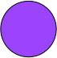
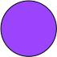
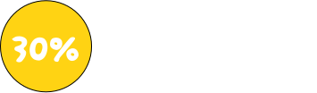
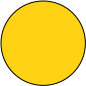
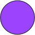
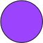
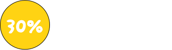
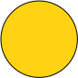

// Boucle d'animation toutes les 5 secondes
setInterval(rotateEtoile, 5000);
// Boucle d'animation toutes les 5 secondes
setInterval(rotateEtoile, 5000);

94%
des Français s’informent tous les jours

 // Boucle d'animation toutes les 5 secondes
setInterval(rotateEtoile, 5000);
// Boucle d'animation toutes les 5 secondes
setInterval(rotateEtoile, 5000);
Les programmes d’information à la télévision et à la radio demeurent des sources majeures pour les Français.
80% des Français s’informent au moins une fois par semaine via une chaîne de télévision, dont 66% quotidiennement.
Les réseaux sociaux et les plateformes vidéo sont consultés quotidiennement par un Français sur deux 53% pour s’informer.
Les jeunes privilégient les réseaux sociaux et les moteurs de recherche, mais 46% des 15-19 ans regardent une chaîne de télévision au moins une fois par jour, et 69% au moins une fois par semaine.
79% des Français suivent régulièrement au moins un journal télévisé, tandis que 61% consultent les chaînes d’information.
En 2023, l'envie de s'informer davantage l'emporte sur la tendance à se détourner de l'actualité. 32% des Français déclarent s'informer plus, poussés par la complexité de l'actualité et le besoin de rester à jour. Ce sont principalement des jeunes, connectés, qui privilégient les réseaux sociaux.
En moyenne, les Français consultent régulièrement 9 sources d’information.


 







La pyramide de la confiance illustre la hiérarchie perçue par les Français : les entreprises restent stables, tandis que la confiance envers les médias demeure faible.
*Organisation non gouvernementale